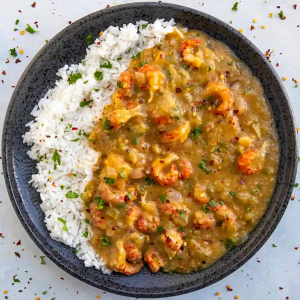

Crawfish Etouffee

Crawfish Etouffee
Crawfish etouffee is a simple dish of sweet and meaty crawfish served up in a rich and flavorful gravy that is made from a quick roux.
Ingredients:
- 4 tablespoons butter or use peanut oil
- 4 tablespoons all purpose flour
- 1 medium onion chopped
- 1 medium bell pepper chopped (I use jalapeno for spicier)
- 1 stalk celery chopped
- 4 cloves garlic chopped
- 2 teaspoons Cajun seasonings or to taste
- 1 teaspoon cayenne pepper optional, for spicier
- Salt and pepper to taste
- 2 cups chicken stock or use seafood stock
- 1 pound crawfish tail meat par-cooked
- 1 tablespoon chopped parsley
- FOR GARNISH: Extra chopped parsley, spicy chili flakes, hot sauce
- Cooked rice for serving if desired
Steps:
- Heat a large pan or pot to medium heat and melt the butter.
- Add the flour and stir to make a roux. Stir continuously for 5 minutes, or until the roux turns a copper color. Do not let the roux burn.
- Add the onion, peppers, celery and garlic. Stir and cook for 5 minutes to soften.
- Stir in the Cajun seasonings, cayenne, salt and pepper to taste, and stock or broth. Reduce heat and simmer for 20 minutes to let the flavors develop, stirring occasionally.
- Add the crawfish tails and warm them through.
- Remove from heat and stir in the parsley.
- Serve over white rice (if desired) and garnish with extra parsley and spicy chili flakes. Don't forget the hot sauce!